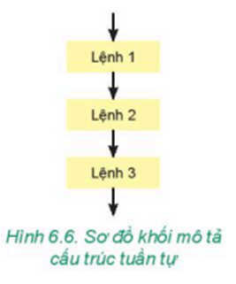
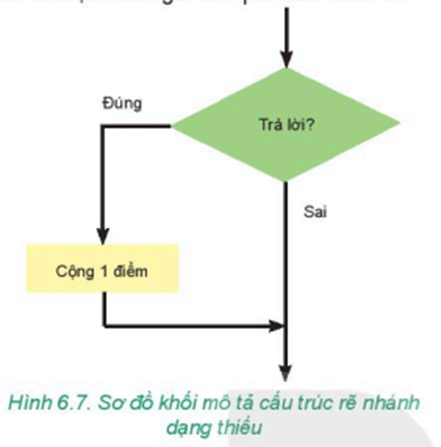
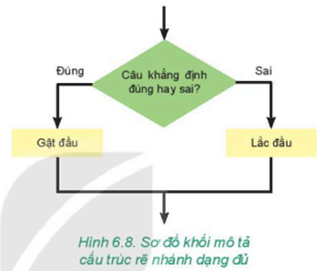
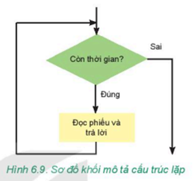

Chuẩn bị: Giáo viên chuẩn bị một số phiếu thuộc hai chủ đề: Sinh học và Toán. Mỗi phiếu ghi một câu khẳng định, có thể đúng hoặc sai, ví dụ “Voi thuộc loài ăn thịt" là một câu sai. Chọn ra 2 hoặc 4 bạn chơi.
Cách chơi: Mỗi lượt chơi là hai bạn và được chọn một trong hai chủ đề. Trong thời gian một phút, hai bạn sẽ bốc phiếu thuộc chủ đề mình lựa chọn và trả lời. Với mỗi phiếu, hai bạn thực hiện các công việc sau đây:
Câu trả lời của mỗi lượt được ghi lại.
Kết quả: Kết thúc trò chơi, cả lớp tổ chức đánh giá kết quả của mỗi lượt. Mỗi câu trả lời đúng được một điểm. Hai bạn thắng cuộc là hai bạn có số điểm cao nhất.
- Chúng ta đã biết, thuật toán là một dãy các chỉ dẫn rõ ràng, có trình tự sao cho khi thực hiện những chỉ dẫn này người ta giải quyết được vấn đề hoặc nhiệm vụ đã cho. Các bước của thuật toán gấp hình trò chơi Đông-Tây-Nam-Bắc ở Bài 15 được thực hiện lần lượt từng bước theo chiều đi từ bắt đầu đến kết thúc là cấu trúc tuần tự. Hình 6.6 minh hoạ cho cấu trúc tuần tự.
- Trong trò chơi ở phần khởi động, khi đánh giá kết quả của một cặp, Với mỗi phiếu, nếu bạn thứ hai của cặp chơi trả lời đúng thì được cộng một điểm. Như vậy ở bước này, tuỳ vào kết quả kiểm tra là đúng hay sai mà bước xử lí tiếp theo sẽ rẽ theo “nhảnh” tương ứng. Cấu trúc như vậy được gọi là câu trúc rẽ nhánh (hay cấu trúc lựa chọn).
- Hình thoi được dùng để mô tả điều kiện trong cấu trúc rẽ nhánh, khi đó Sơ đồ khối mô tả việc đánh giá kết quả như Hình 6.7:
- Cấu trúc rẽ nhánh mô tả việc đánh giá ở Hình 6.7 chỉ thực hiện một công việc (cộng điểm) sau khi kiểm tra điều kiện. Cấu trúc này gọi là cấu trúc rẽ nhánh dạng thiếu.
- Chúng ta xem xét tiếp quyết định của bạn. thứ hai sau khi nghe được câu khẳng định trong phiếu từ bạn thứ nhất. Nếu thấy câu khẳng định đó là đúng thì bạn thứ hai sẽ gật đầu đồng ý, còn không thì lắc đầu. Như vậy, cả hai trường hợp đúng hay sai của điều kiện đều được bạn thứ hai thực hiện bằng hành động tương ứng. Cấu trúc rẽ nhánh này gọi là câu trúc rẽ nhánh dạng đủ.
- Chúng ta cùng xem lại trò chơi ở phần khởi động, mỗi lần bạn thứ nhất đọc câu khẳng định trong phiếu, bạn thử hại phải sử dụng hiểu biết của mình để trả lời xem câu khẳng định đó đúng hay sai và đưa ra dấu hiệu tương ứng. Hoạt động đọc phiếu và trả lời được lặp lại cho đến khi hết thời gian quy định. Đây là một ví dụ về công việc được lặp lại nhiều lần. Việc lặp này được biểu diễn bởi cấu trúc lặp. Sơ đồ khối mô tả cấu trúc lặp được trình bày trong Hình 6.9.
- Trong cấu trúc lặp, bao giờ cũng có bước kiểm tra điều kiện kết thúc quá trình lặp.
- Ba cấu trúc tuần tự, rẽ nhánh và lặp là đủ để mô tả mọi thuật toán.